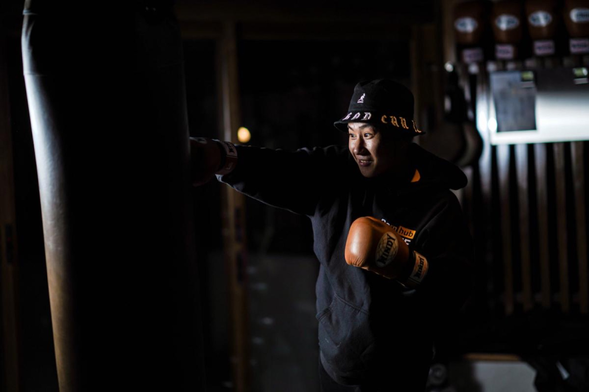
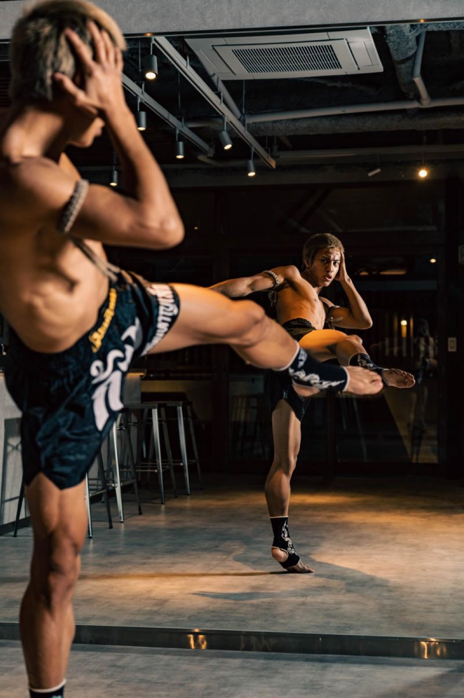
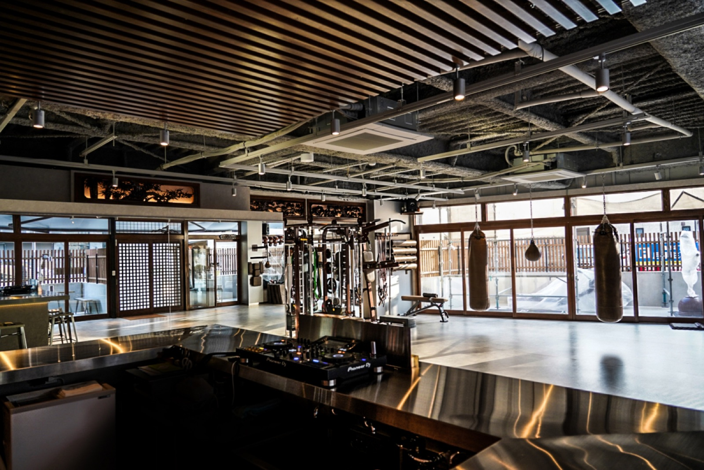

STEP 01
STRETCH
ストレッチ
怪我の防止のため、稽古開始前に必ずストレッチを行います。正しい姿勢と呼吸法を意識しながら、ゆっくりと身体を伸ばしてまいります。
TRAINING
From warm-up to weights — a complete training journey, guided by champions.
ストレッチに始まり、最後のウェイトトレーニングまで。チャンピオンと共に進める王道の稽古フロー。
初めての方でもご安心ください。
経験豊富なトレーナーが、ストレッチから打撃の基本、サンドバッグ・ミット稽古、希望者向けのマススパー、最後のウェイトトレーニングまでを丁寧にご案内いたします。
STEP 01
ストレッチ
怪我の防止のため、稽古開始前に必ずストレッチを行います。正しい姿勢と呼吸法を意識しながら、ゆっくりと身体を伸ばしてまいります。

STEP 02
なわとび
有酸素運動による脂肪燃焼と代謝向上を狙います。バランス感覚・身体の協調性・俊敏性・反射速度を、楽しみながら高めていただけます。

STEP 03
パンチ・キックの基本動作
拳の握り方や基本ポジション、体の使い方を、鏡の前でトレーナーと一緒に確認いたします。一つひとつの動きを分かりやすく丁寧にお伝えいたします。

STEP 04
サンドバッグ打ち
サンドバッグに向かい、実際にパンチ・キックを打ち込んでまいります。正しいフォームとリズムを保ちながら、反復練習を重ねてまいります。
STEP 05
ミット打ち
トレーナーの指示に合わせ、手にしたミットへパンチ・キックを当てていきます。実戦的な感覚でテクニックと反射神経を磨いていただけ、ストレス発散にも効果的でございます。

STEP 06
希望者のみマススパーリング
軽い打撃で間合いと駆け引きを学ぶ実戦稽古でございます。強制ではございませんので、ご希望の方のみご参加いただけます。安全に配慮し、トレーナーが必ず立ち会います。

STEP 07
ウェイトトレーニング
打撃に必要な筋力と体幹を鍛える仕上げのメニューでございます。専用スペースのフリーウェイトで、トレーナーと共にお身体に合った強度で取り組んでまいります。
※ 上記は標準的な稽古の流れでございます。
ご経験・ご体調に合わせて、トレーナーが内容を柔軟に調整いたします。
マススパーリング（STEP 06）はご希望の方のみのご参加で、無理にお勧めすることはございません。
FREE TRIAL · DROP-IN WELCOME
お電話または Instagram DM よりお気軽にお問い合わせください。
Non-Japanese speakers — please contact us via Instagram DM. Our staff will reply in English.